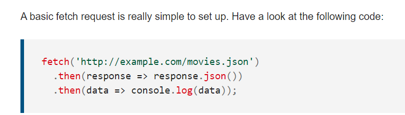

The following notes were taken about this web page
client-side form validationensure data submitted matches the requirements set forth in the various form controls.
Form validationWhen you enter data, the browser and/or the web server will check to see that the data is in the correct format and within the constraints set by the application
Client-side validationvalidation done in the browser.
Server-side validation done on the server.
Client-side validation should not be considered an exhaustive security measure! Your apps should always perform security checks on any form-submitted data on the server-side as well
Reasons to Validate Data:
Client side validation is done with javascript or html
Some built in HTML5 form controls are required, minlength, maxlength, min, max, type and pattern.
In some cases, such as legacy browser support or custom controls, you won't be able to or won't want to use the Constraint Validation API.You're still able to use JavaScript to validate your form, but you'll just have to write your own.
This relies more heavily on Javascript
Click Herefor an example of server side HTML validation with css.
The following notes were taken about this web page
The Fetch API provides a JavaScript interface for accessing and manipulating parts of the HTTP pipeline, such as requests and responses
global fetch() method that provides an easy, logical way to fetch resources asynchronously across the network.
HeadersThe Headers interface allows you to create your own headers object via the Headers() constructor. A headers object is a simple multi-map of names to values:
GuardSince headers can be sent in requests and received in responses, and have various limitations about what information can and should be mutable, headers' objects have a guard property. This is not exposed to the Web, but it affects which mutation operations are allowed on the headers object.
Response objectsResponse instances are returned when fetch() promises are resolved.
Body A body is an instance of any of the following types:ArrayBuffer, ArrayBufferView (Uint8Array and friends), Blob/File, string, URLSearchParams, FormData.
